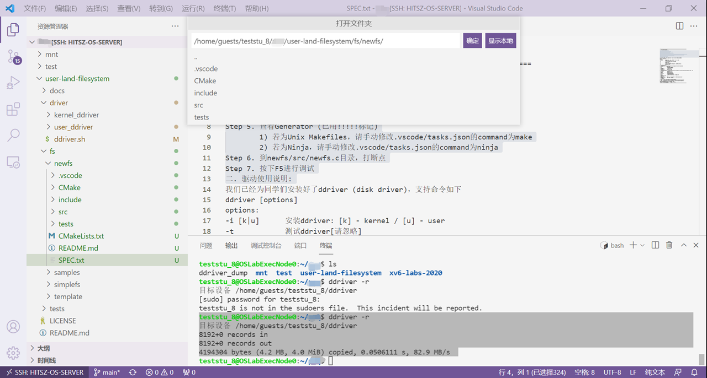
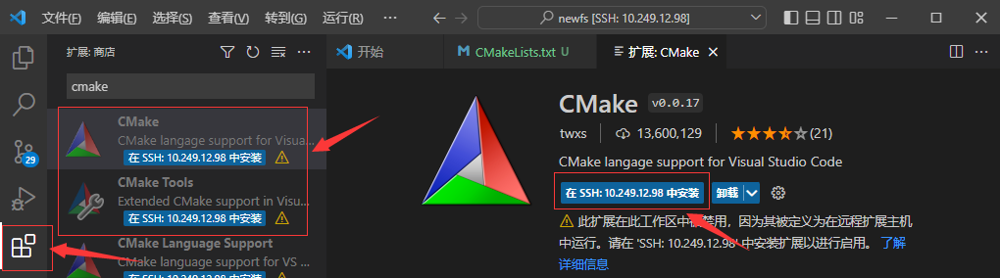
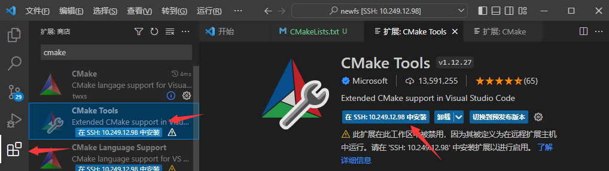
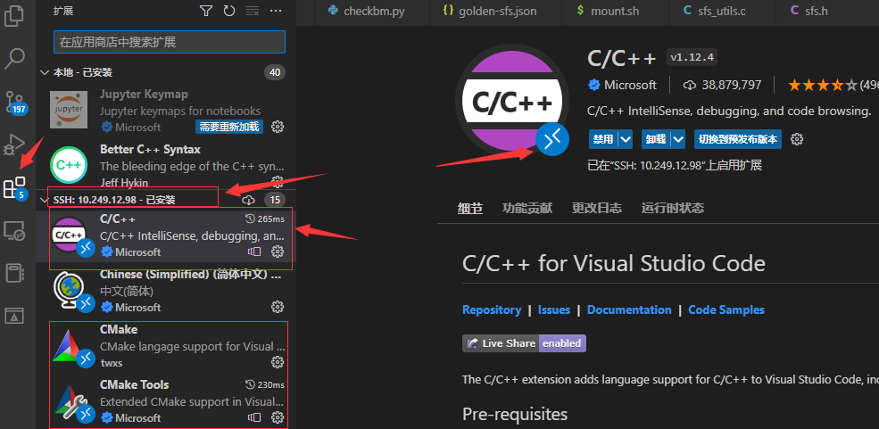
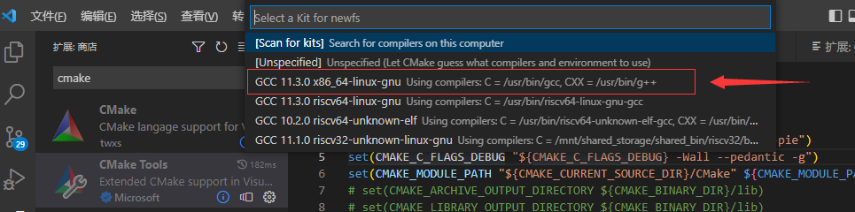
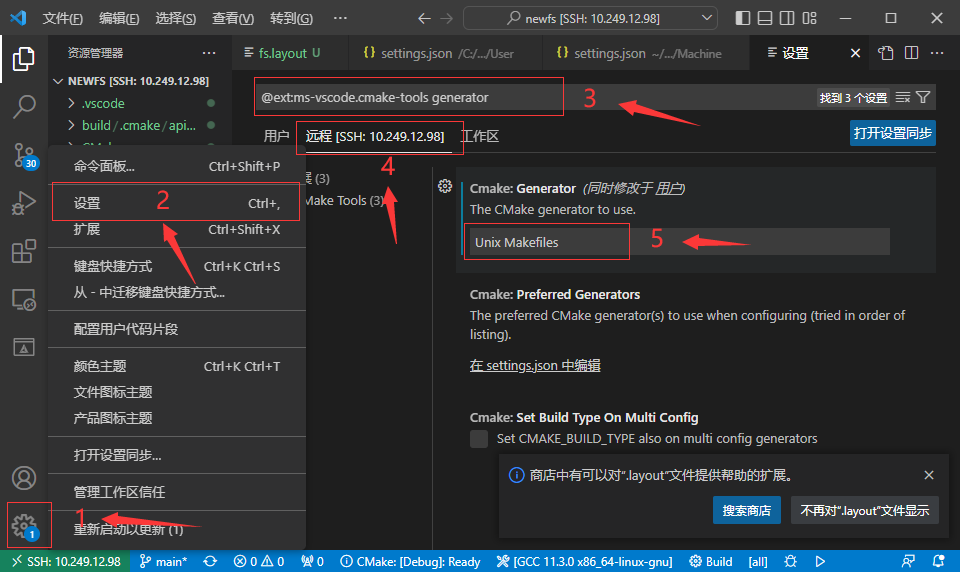
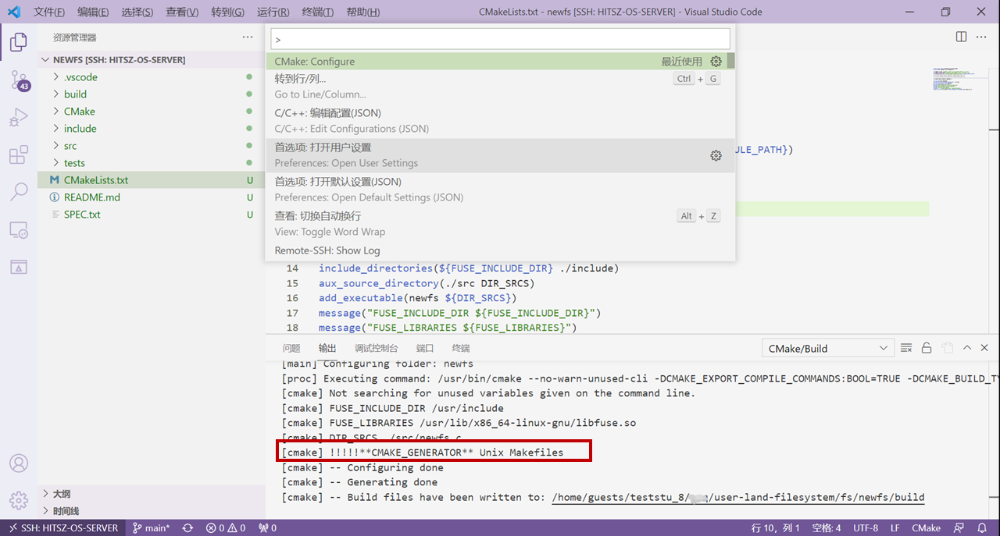
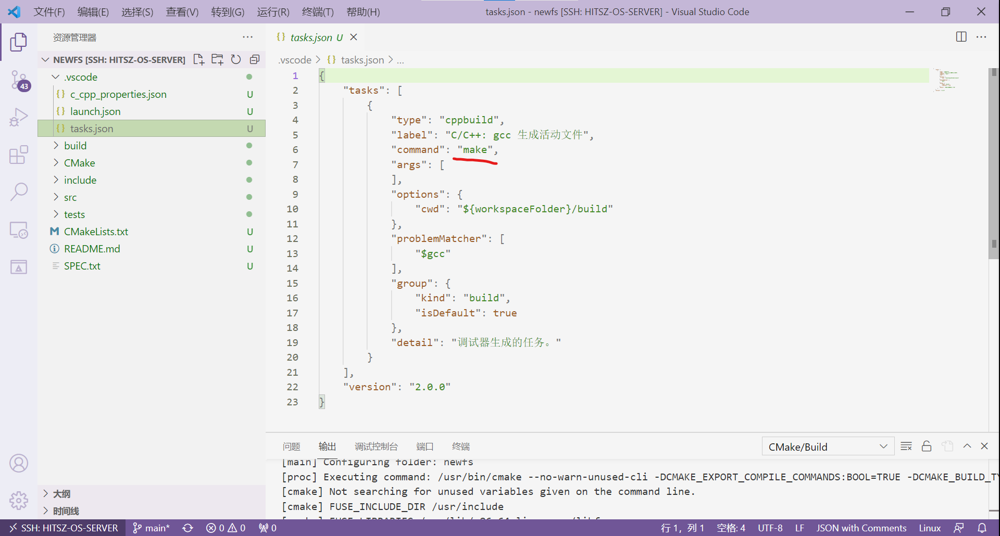
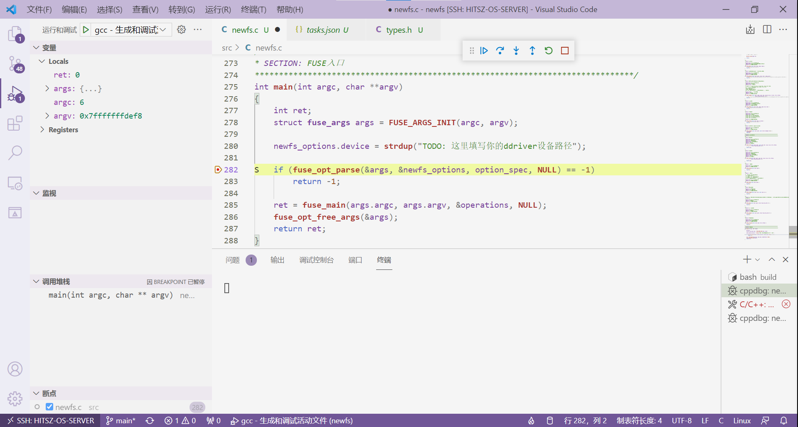
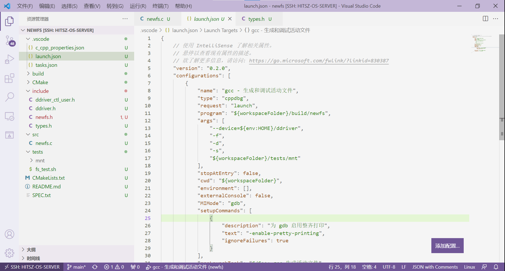

环境搭建与上手¶
1. 实验包结构介绍¶
本次实验充分考虑到 上手成本 ，因此我们编写了简单的环境配置脚本，帮助大家一键配置开发环境。实验包代码获取途径：
# git clone https://gitee.com/ftutorials/user-land-filesystem.git
实验包的结构如下：
user-land-filesystem/
├── driver
│ ├── ddriver.sh
│ ├── kernel_ddriver
│ └── user_ddriver
├── fs
│ ├── samples
│ ├── simplefs
│ └── template
├── LICENSE
├── README.md
├── setenv.sh
└── tests
├── README.md
└── test_ddriver
driver
存放驱动代码。其中kernel_ddriver为内核驱动，user_ddriver为用户驱动，ddriver.sh为控制 ddriver 驱动的脚本。进入user-land-filesystem目录，可以运行如下命令尝鲜：
[root@localhost user-land-filesystem]# ./driver/ddriver.sh
fs
存放 实现的FUSE文件系统 。其中samples为myfs文件系统，simplefs为类EXT2文件系统（缺少数据位图），template用于生成文件系统的代码结构，可忽略。
LICENSE
开源许可，本实验遵循 GPL v3 开源许可。
tests
该文件夹存放DDRIVER用户驱动代码。
setenv.sh
用于配置FUSE文件系统开发环境。
2. 配置开发环境¶
运行./setenv.sh后，即可按照指导一步一步来建立环境：
teststu_8@OSLabExecNode0:~/user-land-filesystem$ ./setenv.sh
请输入工作目录名称 ([工作]目录将被至于./fs目录下): newfs
...
生成工作路径: /home/guests/teststu_8/user-land-filesystem/fs/newfs
请输入项目名称: newfs
...
其中，工作目录名称即开发该文件系统的 文件夹名称 。可以看到，它在fs目录下新建了一个newfs目录作为工作目录。
接着，项目名称即真正的文件系统名称，可以是文件系统的简写，例如：nfs（代表newfs），这里要注意项目名不能有 特殊符号、空格 等。
项目建立完成之后的结构newfs如下所示：
./fs/newfs/
├── .vscode
├── CMake
│ └── FindFUSE.cmake
├── CMakeLists.txt
├── include
│ ├── ddriver_ctl_user.h
│ ├── ddriver.h
│ ├── fs.layout
│ ├── newfs.h
│ └── types.h
├── README.md
├── SPEC.txt
├── src
│ └── newfs.c
└── tests
├── checkbm
│ ├── checkbm.py
│ ├── golden-sfs.json
│ └── golden.json
├── mnt
├── stages
│ ├── cp.sh
│ ├── ls.sh
│ ├── mkdir.sh
│ ├── mount.sh
│ ├── remount.sh
│ ├── rw.sh
│ └── touch.sh
├── fs_test.sh
├── main.sh
└── test.sh
这个结构可以自行修改添加，不过要记得 重新配置CMake 。本次实验要求很简单， 跑过tests下的test.sh的基础功能测试就算完成 。
3. DDRIVER脚本的运用¶
为了方便对 ddriver 设备进行控制，我们将ddriver.sh脚本链接到了 Linux命令系统 中，接下来，大家先到个人目录下运行source ~/.bashrc，然后同学们就可以在任何目录下访问到ddriver.sh脚本。该脚本的主要用途如下：
teststu_8@OSLabExecNode0:~/$ source ~/.bashrc
teststu_8@OSLabExecNode0:~/$ ddriver
====================================================================
]]]]]]]] ]]]]]]]]
] ]] ] ]] ] ]] ]] ]] ]] ]-------] ] ]]
] ] ] ] ] ]] ]] ]] ]] ]_______/ ] ]]
] ]] ] ]] ]] ]] ] ] \ ]]
]]]]]]]] ]]]]]]]] ]] ]] ]] ]]]]]]]] ]]
====================================================================
用法: ddriver [options]
options:
-i [k|u] 安装ddriver: [k] - kernel / [u] - user
-t 测试ddriver[请忽略]
-d 导出ddriver至当前工作目录[PWD]
-r 擦除ddriver
-l 显示ddriver的Log
-v 显示ddriver的类型[内核模块 / 用户静态链接库]
-h 打印本帮助菜单
====================================================================
常用的功能是-v、-d与-r，它们的用途分别是 查看ddriver设备类型及设备位置 、 将ddriver设备镜像导出到当前目录下 、 将ddriver设备擦除干净 。用法如下：
====================================================================
# 查看设备位置和类型
teststu_8@OSLabExecNode0:~$ ddriver -v
静态链接库设备: /home/guests/teststu_8/ddriver
teststu_8@OSLabExecNode0:~$
====================================================================
# 将ddriver设备导出到当前目录下
teststu_8@OSLabExecNode0:~/$ ddriver -d
[sudo] password for teststu_8:
目标设备 /home/guests/teststu_8/ddriver
8192+0 records in
8192+0 records out
4194304 bytes (4.2 MB, 4.0 MiB) copied, 0.094218 s, 44.5 MB/s
文件已导出至/home/guests/teststu_8/ddriver_dump，请安装HexEditor插件查看其内容
teststu_8@OSLabExecNode0:~/$ ls
ddriver_dump
teststu_8@OSLabExecNode0:~/$
====================================================================
# 将ddriver设备擦除干净
teststu_8@OSLabExecNode0:~/$ ddriver -r
目标设备 /home/guests/teststu_8/ddriver
8192+0 records in
8192+0 records out
4194304 bytes (4.2 MB, 4.0 MiB) copied, 0.0506111 s, 82.9 MB/s
teststu_8@OSLabExecNode0:~/$ cat ./ddriver_dump
teststu_8@OSLabExecNode0:~/$
4. 项目编译¶
项目编译的过程在新建项目的SPEC.txt文件中有所交代，这里提出来讲一讲：
- Step 1 . SSH打开
./fs/newfs。打开VSCode软件，点击左上角 "文件" → "打开文件夹"，选择实验包目录下的fs/newfs文件夹。

- Step 2 . 在远程实验平台上安装CMake、CMake Tools、C/C++三个插件。



- Step 3 . 打开CMakeLists.txt文件
- Step 4 . ctrl + shift + p呼出命令菜单
- Step 5 . 输入CMake: Configure
- Step 6 . 选择X86_64版本的GCC：

- Step 7 . 点击VSCode左下角“管理”按钮，选择“设置”，然后在弹出的窗口中输入
@ext:ms-vscode.cmake-tools generator，再点击“远程[SSH:10.249.12.98]”选项栏，在Cmake: Generator选项框中填入Unix Makefiles。

- Step 8 . 再次用ctrl + shift + p呼出命令菜单，输入CMake: Configure，查看输出窗口是否有“Generator” (已用!!!!!标记)

若 CMAKE_GENERATOR 为 Unix Makefiles ，请手动修改.vscode/tasks.json的command为make，若为 Ninja ，请手动修改.vscode/tasks.json的command为ninja，如下图所示：

-
Step 9 . 到
newfs/src/newfs.c目录，打断点 -
Step 10 . 按下F5进行调试

编译运行原理：
- 编译。 编译环节利用CMakeLists工程自动帮助我们编译，这里要安装CMake Tools等拓展，相信大家前面也装过了。其中，按下F5后，VSCode会首先运行
.vscode目录下tasks.json中的命令：

该命令执行的操作就是在CMakeLists生成的build目录下运行make，由此完成自动编译。
- 运行。 运行过程是在
.vscode目录下launch.json中定义：

把运行命令展开实际上是：
teststu_8@OSLabExecNode0:~/user-land-filesystem/fs/newfs$ ./build/newfs --device=/home/guests/teststu_8/ddriver -f -d -s ./tests/mnt/
正如我们前面 实验原理 - FUSE架构 中说到的那样， FUSE文件系统 的挂载不需要使用mount命令，而是直接用编译出来的二进制文件。上述命令的意义为： 将设备/home/guests/teststu_8/ddriver 以 newfs文件系统 形式， 挂载 到 ./tests/mnt目录 下。
进而衍生出 FUSE文件系统 的 卸载 ，同样，与传统内核文件系统卸载不同，它的卸载命令为：
teststu_8@OSLabExecNode0:~/user-land-filesystem/fs/newfs$ fusermount -u ./tests/mnt
teststu_8@OSLabExecNode0:~/user-land-filesystem/fs/newfs$
这里使用fusermount -u命令进行FUSE文件系统的卸载。